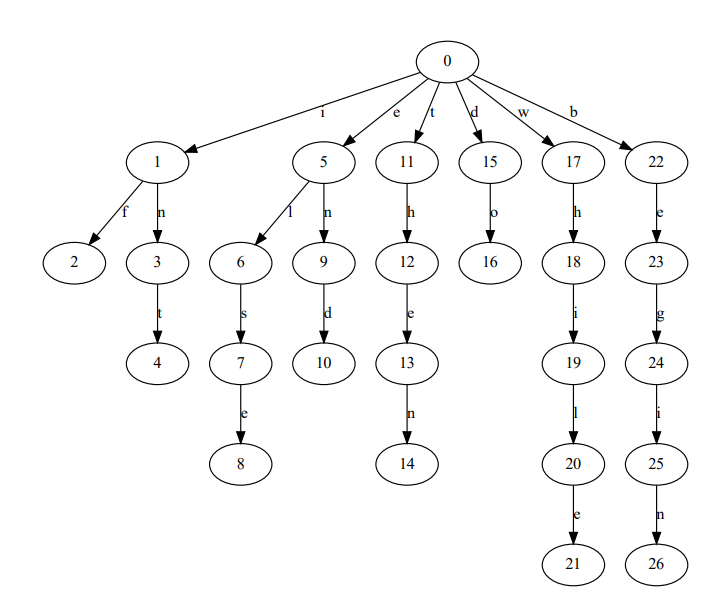
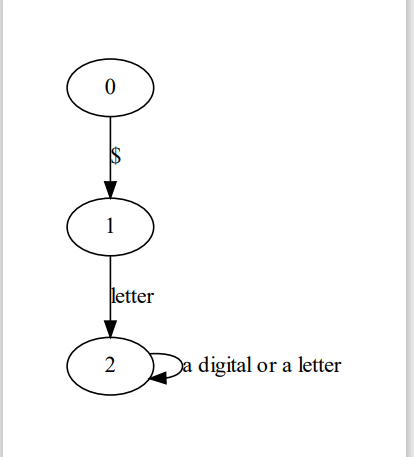

编译原理-词法分析程序的构建-语法分析程序的构建
更新时间线
咕咕咕了一两周了，我意识到不能这样了，所以来完成语法分析程序以及之后的内容了。
都两周了所以我对之前的词法分析程序进行一次再理解+重构
添加语法分析
- 更新一些子程序的程序执行流程图
- 梳理如何构建一个词法分析程序 （我TM为啥没有好好听课！！！）
- 绘图工具的准备
- 绘制词法规则转换图
- 添加伪代码编写工具
- 分析程序绘制状态转换图
- 创建git仓库 存放代码
编译原理-词法分析程序的构建
目标
将下面将下面的文法规则中词法抽离出来并构建词法分析程序
1 | 架空语言的文法规则： |
工具的准备
绘图工具
- Graphviz
我这里使用Graphviz+python的模式绘图如果你会Graphviz的原生编程语言可以不用python
伪代码编写工具
hexo无法渲染pseudocode代码所以需要自己魔改一下
- blog显示伪代码工具已就绪
- 使用latex做伪代码的显示 （我实在不知道latex怎么在typora中显示）
构建词法分析程序的步骤
基本步骤：
- 从文法中抽离词法
- 将词法形成状态转换图 形成 DFA 或者 NFA
- 对DFA 或者 NFA进行处理 化简
- 在编写程序的时候首先要定义各个符号的value
分析程序
其实词法是文法的一部分 词法分析程序由于繁琐复杂所以将其抽离出来
将词法简单地抽离出来后我们发现这有可能是一个NFA (不确定的有穷自动机) 这时候就需要我们将 NFA DFA化
词法分析程序的入口和出口
入口：一般是读入一段自己编写的程序 这里让程序读入txt文本
出口：词法分析程序所输出 的单词符号可以采用二元式表示(单词种别，单词自身的值)
关于出口的二元式当单词为标识符的时候 二元式中单词自身的值可以作为该标识符在符号表中所置的位置指针。
从文法中抽离词法
-
1、我们该抽离哪些内容：
关键字
1
<关键字> → if|else|then|do|while|begin|end|int
标识符
1
<标识符> → $<字母>|<标识符><字母>|<标识符><数字>
常数
1
<常量> → <无符号整数>
运算符
1
2
3
4<加法运算符> → +
<乘法运算符> → *
<关系运算符> → <|>|!= |>=|<= |==
<赋值运算符> → =界符
1
<界符> → ;|,|(|)
符号的对应value的定义
由于词法分析程序需要输出的是一个二元式 (单词种别，单词自身的值)所以需要对各种的单词进行一个种类赋值
1 | // 给各个符号进行如下的赋值 |
1 | /* 0 <constant> |
绘制词法规则转换图
有些不标准 但是没有找到更好的绘制状态图的工具所以先用着


算法伪代码
程序框图
总程序执行流程图

扫描子程序的程序框图：

语法分析
在完成了词法分析，生成了二元式之后。我们接下来要做的就是对程序进行语法分析：
语法分析和词法分析的互动
按照书上说，语法分析和词法分析其实是同时进行的，对（自定义规则的）程序进行语法分析的时候，语法分析程序会调用词法分析程序，每次调用（词法分析程序）都会产生一个“东西”给语法分析程序进行判断。
1 | flowchart TD |
上下文无关文法
下推自动机 PDA
语法分析的方法
语法分析有一些方法，这里按照实验手册的要求使用**“递归下降分析技术”**
递归下降分析技术
递归下降法分析技术是top-down（自上而下的分析技术中的一种）
自上而下的分析技术不确定的分析方法：回溯法
自上而下的分析技术确定的分析方法： 递归下降法（递归下降分析技术）、预测分析法
掌握“递归下降分析技术”的一个要点是掌握判断一个文法是否是LL1文法，并且需要掌握将一个非LL1文法转换到LL1文法的方法
LL1文法：
L：从左往右扫描 Left-to-Right
L：采用最左推导
1：读头下的符号a就能确定候选式
- 绝大多数的程序语言采用LL1就能完全消除回溯
- 根据读头a开始的k个符号记作LL(k) 文法
LL1文法是上下文无关文法（CFG）的一个子集
LL1文法特征：
- 不含左递归
- 无回溯 每次推导只有一个候选式
首符集 First集合

存在的意义是让我们在最每个语法进行编程判断的时候能够消除回溯。
First集合的判断：
不包含空串：

包含空串：

空串处理：


非LL1文法转换为LL1文法
- 消除回溯：
提取左公因子

- 消除左递归

消除左递归很重要！

在消除左递归的过程中我们只关心出现在产生式右侧的第一个和左侧字母相同的大写字母且只关心这一个！！

语法分析实现：
1、pareserMainfunction
- parseProgram：
1 | <程序> →<变量说明部分>;<语句部分> |
% $ParseProgram$ 程序伪代码
\begin{algorithm}
\caption{$ParseProgram$ 程序伪代码}
\begin{algorithmic}
\Require void
\Ensure void
\Procedure{ParseProgram}{String matchChar}
\State \Call{ParseVariableStatements}{void} // 解析变量的声明和定义
\State \Call{Match}{";"} // 解析“;” 分隔符号
\If{Match程序报错}
\State \Call{ErrorProgressing}{parameters} // 异常处理
\EndIf
\State \Call{ParsePhrase}{void} // 解析程序语句
\EndProcedure
\end{algorithmic}
\end{algorithm}
1、match()程序的实现
match()需要做到匹配你所指定的标识符：如果不是你所指定的标识符那么就会报错也就是将bHaveError设置为true
match()程序流程图
.png)
\begin{algorithm}
\caption{$Match$ 程序伪代码}
\begin{algorithmic}
\Require String matchChar 带匹配字符
\Ensure void
\Procedure{Match}{String matchChar}
\If{读头下的二元式type$\neq$matchChar}
\State $bHaveError \gets true$
\EndIf
\EndProcedure
\end{algorithmic}
\end{algorithm}
1、识别语句
1 | <语句部分> → <语句部分><语句>;|<语句>; |
1、识别标识符列表
识别标识符列表的时候出现了左递归，那么进行左递归的消除。
1 | <标识符列表> → <标识符列表>,<标识符>|<标识符> |
识别标识符列表程序的伪代码展示：
\begin{algorithm}
\caption{$ParseIdentifiersList$ 解析标识符列表的语法分析程序1}
\begin{algorithmic}
\Require 由Scanner()程序产生的二元式(存放在全局变量 wdNextWord中)
\Ensure void
\Procedure{ParseIdentifiersList}{void}
\State Match(); // 匹配标识符
\State \Call{ParseIdentifiersList1}{void};
\EndProcedure
\Procedure{ParseIdentifiersList1}{void}
\If{读头指针下不为空符号串}
\State Match(","); // 匹配“,”符号
\State Match(); // 匹配标识符
\State \Call{ParseIdentifiersList1}{void};
\Else
\State do nothing
\EndIf
\EndProcedure
\end{algorithmic}
\end{algorithm}
其实是一个html元素然后包含一个Katex的描述伪代码的源码语言
1 | <pre id="pseudocode" class="pseudocode" style="display:hidden;"> |
1、表达式这边的语法的规整：
1 | <表达式> → <项>|<表达式><加法运算符><项> |
1、项
1 | <项> → <因子>|<项><乘法运算符><因子> |
遇到的一些问题：
freopen重定向导致控制台输入无效从而使得system(“pause”)无效
freopen（）重定向的打开和关闭 - Rogn - 博客园 (cnblogs.com)
在写代码时常出现这种情况：我们从原有文件使用freopen导入数据，但之后关闭文件再次从键盘输入。我们如果直接fclose(stdin)，之后的键盘输入肯定不管用。应如何解决？
显然，如果在使用完freopen之后，如果还需要使用标准输入输出，不能把它们直接fclose。
我们不妨再次重定向，把stdin、stdout重定向到控制台，就能从键盘接受输入、从屏幕输出。
说白了我使用了freopen 将stdin重定向到目标位文件之后需要再将stdin重定向回到控制台。
头文件中变量的声明和定义
问题描述：
在对程序进行重构的过程中发现将变量的定义放到头文件中于是会在之后的应用中 特别是 头文件出现在多个cpp文件中的时候导致变量被多次定义 变量的空间被多次开辟 进而导致变量的重复“定义”！
解决方法：
添加extern 关键字 他只声明变量而不会为变量开辟空间。
特别的：
头文件中应使用extern 关键字声明全局变量（不定义），如果这个变量有多个文件用到，可以新建一个cpp，在其中定义，把这个cpp加入工程即可。头文件请不要定义任何变量，那是非常业余的行为……
一般在头文件中申明，用extern, 在cpp中定义。 如果在头文件中定义，如果这个头文件被多个cpp引用，会造成重复定义的链接错误。
头文件只能申明全局变量（extern），不可定义（不推荐使用） .cpp里，在最外层定义即可（int gi），直接引用
所以最好是新建一个cpp 将一些变量定义 加入到其中。
在实际的使用中如果在头文件中声明一个数组变量而在cpp中使用它的时候使用for(auto x: arr)这样的循环来遍历 那么会出现问题。
错误 C3316 “std::string []”: 大小未知的数组不能在基于范围的语句中使用
解决这样的问题的方法也很简单在头文件中的声明里面直接声明数组的大小报错就消失了。
todo
- [ ] 写算法的伪代码
- [ ] 写算法的流程图
- [ ] 状态转换图
- [ ] 图形化界面